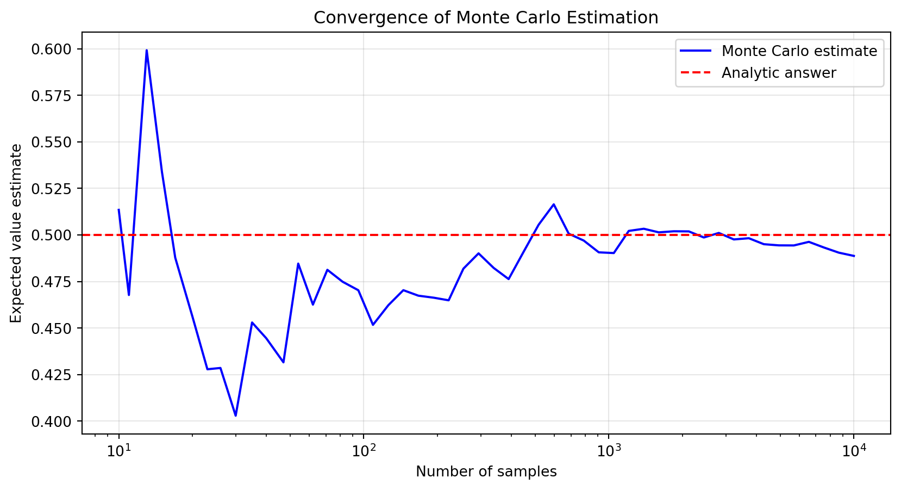
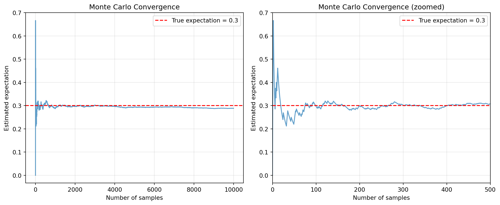
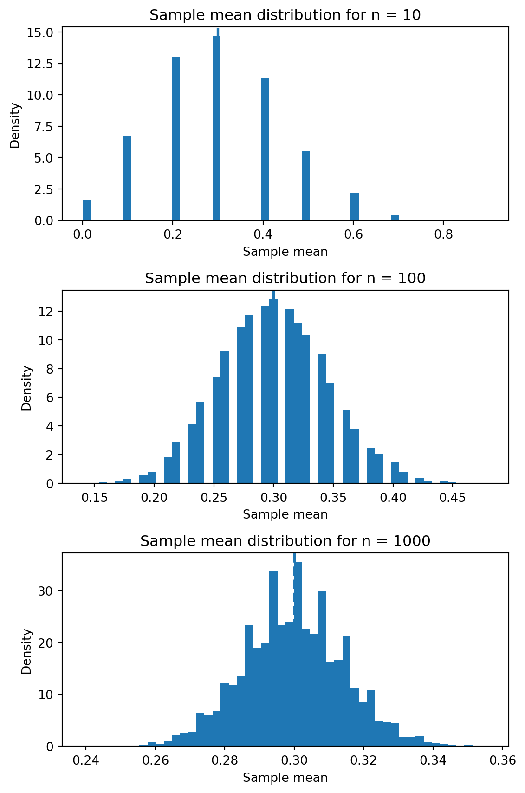
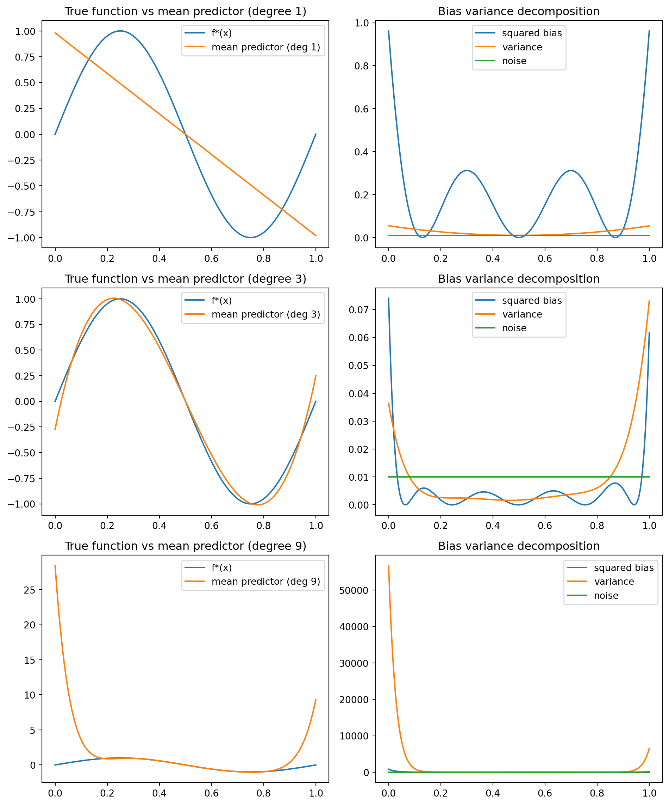
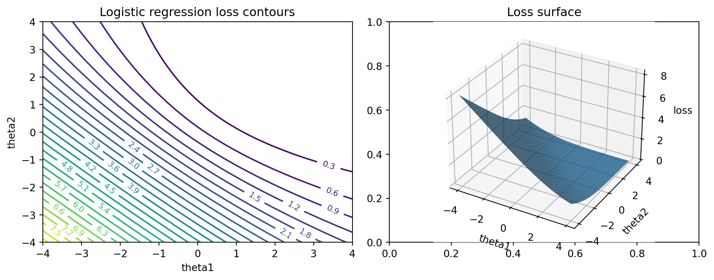

Mathematical ideas are the bedrock on which modern machine learning systems stand. Models, libraries, and benchmarks change quickly, but the underlying concepts of probability, information, and optimization are remarkably stable. This chapter revisits these concepts from the specific perspective of machine learning and artificial intelligence.
We have three main goals:
To provide a working vocabulary for probability and random variables.
To explain how information measures such as entropy and mutual information arise naturally in learning problems.
To develop geometric intuition about parameter spaces and loss surfaces, including convexity, local minima, and saddle points.
The aim is not to prove every theorem in full generality, but to provide just enough rigor and intuition that later use of these concepts is well grounded. For full measure-theoretic treatments of probability and for deep results on high-dimensional concentration, you are encouraged to consult standard references such as Grimmett and Welsh (2014) and Vershynin (2018).
Throughout the chapter, we alternate between three layers:
Conceptual and mathematical exposition.
Concrete Python implementations that simulate or compute the relevant objects.
Line-by-line walkthroughs that connect the code to the mathematics.
We will reuse many of these code snippets in later chapters.
20.1 Probability as a language for uncertainty
Machine learning is, at its core, about learning from data produced by uncertain processes. Probability gives us a language to describe and manipulate that uncertainty.
20.1.1 Random variables, distributions, and expectations
Informally, a random variable is a quantity whose value is not known in advance but is determined by some random process. More precisely, in measure-theoretic terms, a random variable is a measurable function from an underlying sample space to the real numbers. For the purposes of this book, we will adopt a simpler working definition.
Working definition: A random variable \(X\) is a variable that takes values in some set (for example, the real numbers) according to a probability distribution.
Examples:
Number of heads in 10 coin flips.
Height of a randomly chosen person.
The loss of a model on a randomly chosen input.
A probability distribution describes how likely different values of a random variable are. For discrete variables:
The distribution is a function \(p(x)\) with \(p(x) \ge 0\) and \(\sum_x p(x) = 1\).
We interpret \(p(x)\) as the probability that \(X = x\).
For continuous variables:
The distribution is described by a density \(p(x)\) with \(p(x) \ge 0\) and \(\int p(x), dx = 1\).
The probability that \(X\) falls in a set \(A\) is \(\int_A p(x), dx\).
The single most important quantity in probability theory for machine learning is the expectation or expected value of a random variable.
\[
\mathbb{E}[X] =
\begin{cases}
\displaystyle \sum_x x \, p(x) & \text{if } X \text{ is discrete}, \\
\displaystyle \int x \, p(x) \, dx & \text{if } X \text{ is continuous}.
\end{cases}
\]
Intuitively, \(\mathbb{E}[X]\) is the long-run average of many independent draws of \(X\).
Two more derived quantities appear everywhere in learning:
This is the population risk or true risk. We rarely have direct access to \(L(\theta)\); instead, we approximate it from a finite dataset.
20.1.2 Analytic Computation of Expectations
Before turning to Monte Carlo methods, let us see some examples where expectations can be computed analytically through direct summation or integration. These examples serve two purposes: they give us exact answers that we can use to verify our Monte Carlo estimates, and they help us understand when analytic computation is feasible versus when we need simulation.
20.1.2.1 Example 1: Discrete Summation for a Geometric Distribution
Consider a geometric random variable \(X\) that represents the number of coin flips needed to get the first heads, where each flip has a probability \(p\) of success. The probability mass function is
\[
P(X = k) = (1-p)^{k-1} p \quad \text{for } k = 1, 2, 3, \dots
\]
We can compute the expectation analytically by direct summation:
\[
\mathbb{E}[X] = \sum_{k=1}^{\infty} k \cdot (1-p)^{k-1} p = p \sum_{k=1}^{\infty} k (1-p)^{k-1}.
\]
Using the formula for the derivative of a geometric series, we recognize that
\[
\mathbb{E}[X] = p \cdot \frac{1}{(1-(1-p))^2} = p \cdot \frac{1}{p^2} = \frac{1}{p}.
\]
So if a coin has a probability \(p = 0.25\) of heads, we expect to need exactly \(1/0.25 = 4\) flips on average to see the first heads. Let us verify this with both analytic computation and Monte Carlo estimation.
Code
import numpy as npimport matplotlib.pyplot as plt# Analytic expectation for geometric distributionp =0.25analytic_mean =1/ pprint(f"Analytic expectation: {analytic_mean}")# Monte Carlo estimationnp.random.seed(42)n_samples =10000# Generate geometric samples: number of flips until first successsamples = np.random.geometric(p, size=n_samples)mc_mean = np.mean(samples)print(f"Monte Carlo estimate (n={n_samples}): {mc_mean:.4f}")print(f"Difference: {abs(mc_mean - analytic_mean):.4f}")
Analytic expectation: 4.0
Monte Carlo estimate (n=10000): 3.9214
Difference: 0.0786
Notice how the Monte Carlo estimate converges to the analytic answer as we increase the number of samples. The key advantage of the analytic approach here is that we get the exact answer immediately, but it required us to know the closed-form series summation.
20.1.2.2 Example 2: Continuous Integration for an Exponential Distribution
Consider an exponential random variable \(X\) with rate parameter \(\lambda > 0\), which has density
This distribution models waiting times, such as the time until a server receives its next request. We can compute the expectation by direct integration:
For example, if requests arrive at a rate of \(\lambda = 2\) per second, the expected waiting time between requests is \(1/2 = 0.5\) seconds. We can verify this result using Monte Carlo sampling.
Code
# Analytic expectation for exponential distributionlambda_rate =2.0analytic_mean =1/ lambda_rateprint(f"Analytic expectation: {analytic_mean}")# Monte Carlo estimationnp.random.seed(42)n_samples =10000samples = np.random.exponential(scale=1/lambda_rate, size=n_samples)mc_mean = np.mean(samples)print(f"Monte Carlo estimate (n={n_samples}): {mc_mean:.4f}")print(f"Difference: {abs(mc_mean - analytic_mean):.4f}")
Analytic expectation: 0.5
Monte Carlo estimate (n=10000): 0.4887
Difference: 0.0113
Code
# Visualize convergence of Monte Carlo estimatesample_sizes = np.logspace(1, 4, 50).astype(int)mc_estimates = [np.mean(samples[:n]) for n in sample_sizes]plt.figure(figsize=(10, 5))plt.semilogx(sample_sizes, mc_estimates, 'b-', label='Monte Carlo estimate')plt.axhline(analytic_mean, color='r', linestyle='--', label='Analytic answer')plt.xlabel('Number of samples')plt.ylabel('Expected value estimate')plt.title('Convergence of Monte Carlo Estimation')plt.legend()plt.grid(True, alpha=0.3)plt.show()

Figure 20.1: Convergence of the Monte Carlo estimator toward the analytic expectation
Again, the analytic integration gives us the exact answer through calculus, while Monte Carlo provides an approximation that improves with more samples (Figure Figure 20.1).
20.1.3 When Monte Carlo Estimation Becomes Essential
While the examples above show that analytic methods can be elegant and exact, there are many situations in machine learning and statistics where Monte Carlo estimation is not just convenient but practically necessary. Let us examine several such scenarios.
20.1.3.1 Example 3: High-Dimensional Integration
Consider computing the expected value of a function over a multivariate normal distribution in high dimensions. Suppose we have a random vector \(\mathbf{X} \in \mathbb{R}^d\) with \(\mathbf{X} \sim \mathcal{N}(\boldsymbol{\mu}, \boldsymbol{\Sigma})\), and we want to compute
where \(g\) is some nonlinear function such as \(g(\mathbf{x}) = \exp(\|\mathbf{x}\|^2)\) or \(g(\mathbf{x}) = \max(0, \mathbf{x}^\top \mathbf{w})\).
For analytic integration, we would need to evaluate a \(d\)-dimensional integral. Even for simple functions and distributions, this quickly becomes intractable. Traditional numerical integration methods, such as quadrature rules, suffer from the curse of dimensionality: the number of evaluation points grows exponentially with dimension. For instance, using just 10 points per dimension would require \(10^d\) function evaluations, which becomes prohibitive even for modest \(d\).
Monte Carlo estimation, in contrast, has a convergence rate that does not depend on dimensionality. The error decreases as \(O(1/\sqrt{n})\) regardless of how many dimensions we have. Let us demonstrate this with a concrete example.
Code
# Function to estimate E[||X||^2] for X ~ N(0, I_d)# Analytically, this equals d (sum of d chi-squared(1) variables)def estimate_squared_norm_expectation(d, n_samples):""" Estimate E[||X||^2] for X ~ N(0, I_d) using Monte Carlo. The analytic answer is exactly d. """ samples = np.random.randn(n_samples, d) squared_norms = np.sum(samples**2, axis=1)return np.mean(squared_norms)# Test across different dimensionsdimensions = [2, 5, 10, 20, 50, 100]n_samples =10000print("Dimension | Analytic | Monte Carlo | Error")print("-"*50)for d in dimensions: np.random.seed(42) analytic = d mc_estimate = estimate_squared_norm_expectation(d, n_samples) error =abs(mc_estimate - analytic)print(f"{d:9d} | {analytic:8.2f} | {mc_estimate:11.4f} | {error:.4f}")
As we can see, Monte Carlo provides reliable estimates across all dimensions with the same number of samples. Trying to achieve similar accuracy with numerical integration in 100 dimensions would be completely infeasible.
20.1.3.2 Example 4: Complex Dependencies and Transformations
Consider a machine learning scenario where we want to estimate the expected prediction error of a neural network on data drawn from a complex distribution. Specifically, suppose we have input features \(\mathbf{x}\) that follow some intricate joint distribution (perhaps with nonlinear dependencies), and we want to compute
where \(f_\theta\) is our neural network and \(y(\mathbf{x})\) is the true function we are trying to learn.
Even if we could write down the density \(p(\mathbf{x})\) in closed form (which is rare in practice), computing this expectation analytically would require integrating a highly nonlinear function (the neural network) over a potentially complex, high-dimensional region. This is essentially impossible to do by hand or with standard integration techniques.
Monte Carlo estimation handles this effortlessly: we simply draw samples from \(p(\mathbf{x})\), evaluate the squared error for each sample, and average the results.
Code
# Simulate a scenario with complex data distribution# X1, X2 correlated, and target is a nonlinear functionnp.random.seed(42)def generate_complex_data(n):"""Generate data with nonlinear dependencies."""# Create correlated features x1 = np.random.randn(n) x2 =0.7* x1 +0.3* np.random.randn(n) x3 = np.sin(x1) +0.2* np.random.randn(n) X = np.column_stack([x1, x2, x3])# Nonlinear target function y = np.sin(x1 * x2) +0.5* x3**2+0.1* np.random.randn(n)return X, y# Simple model: linear predictor (which won't fit perfectly)def linear_model(X, theta):"""Linear model f(x) = theta^T x"""return X @ theta# Generate test dataX_test, y_test = generate_complex_data(10000)# Fit a simple linear model (using least squares)X_train, y_train = generate_complex_data(1000)theta = np.linalg.lstsq(X_train, y_train, rcond=None)[0]# Monte Carlo estimate of expected squared errorpredictions = linear_model(X_test, theta)squared_errors = (predictions - y_test)**2mc_expected_error = np.mean(squared_errors)print(f"Monte Carlo estimate of E[(f(X) - y)^2]: {mc_expected_error:.4f}")print(f"Standard error: {np.std(squared_errors) / np.sqrt(len(squared_errors)):.4f}")# Compare to training error (which we can also compute)train_predictions = linear_model(X_train, theta)train_error = np.mean((train_predictions - y_train)**2)print(f"\nTraining error: {train_error:.4f}")print(f"Generalization gap: {mc_expected_error - train_error:.4f}")
Monte Carlo estimate of E[(f(X) - y)^2]: 0.6353
Standard error: 0.0083
Training error: 0.6024
Generalization gap: 0.0330
This type of calculation is performed millions of times in machine learning practice, every time we evaluate a model on a test set. The alternative of computing the expectation analytically would require solving intractable integrals over the data distribution.
20.1.3.3 Example 5: Estimating Gradients in Stochastic Optimization
One of the most important applications of Monte Carlo estimation in machine learning is in computing gradients for stochastic gradient descent. When training a model with parameters \(\theta\), we often want to compute
which is the gradient of the expected loss with respect to the parameters. Computing this analytically would require access to the full distribution \(\mathcal{D}\) and the ability to differentiate under the integral sign, which is typically impossible.
Instead, we use the Monte Carlo gradient estimator: we sample a minibatch of data points, compute the gradient of the loss on each point, and average them. This is the fundamental operation behind modern deep learning.
Code
# Illustrate Monte Carlo gradient estimation# Simple example: logistic regressionfrom scipy.special import expit # sigmoid functiondef logistic_loss(theta, X, y):"""Compute logistic loss for binary classification.""" predictions = expit(X @ theta)return-np.mean(y * np.log(predictions +1e-10) + (1- y) * np.log(1- predictions +1e-10))def logistic_gradient(theta, X, y):"""Compute gradient of logistic loss.""" predictions = expit(X @ theta) errors = predictions - yreturn X.T @ errors /len(y)# Generate synthetic classification datanp.random.seed(42)n_train =1000n_features =5X_train = np.random.randn(n_train, n_features)true_theta = np.random.randn(n_features)prob = expit(X_train @ true_theta)y_train = (np.random.rand(n_train) < prob).astype(float)# Compare full gradient vs Monte Carlo estimates with different batch sizestheta = np.zeros(n_features)batch_sizes = [10, 50, 100, 500]full_gradient = logistic_gradient(theta, X_train, y_train)print("Full batch gradient (analytic on full dataset):")print(full_gradient)print(f"\nGradient norm: {np.linalg.norm(full_gradient):.4f}\n")print("Monte Carlo gradient estimates:")for batch_size in batch_sizes: indices = np.random.choice(n_train, size=batch_size, replace=False) X_batch = X_train[indices] y_batch = y_train[indices] mc_gradient = logistic_gradient(theta, X_batch, y_batch) error = np.linalg.norm(mc_gradient - full_gradient)print(f"Batch size {batch_size:3d}: error = {error:.4f}")
Full batch gradient (analytic on full dataset):
[ 0.06932369 0.07899704 0.25845906 0.03843173 -0.11764013]
Gradient norm: 0.3052
Monte Carlo gradient estimates:
Batch size 10: error = 0.1461
Batch size 50: error = 0.1441
Batch size 100: error = 0.0555
Batch size 500: error = 0.0330
The Monte Carlo gradient estimate becomes more accurate as we increase the batch size, but even small batches give us useful gradient information. This trade-off between computational cost and accuracy is central to modern machine learning: we prefer to take many cheap, noisy gradient steps rather than fewer expensive, exact ones.
20.1.4 Monte Carlo Estimation: The General Framework
Having seen both analytic computation and scenarios where Monte Carlo is essential, we can now formalize the general Monte Carlo approach. Suppose \(X_1, \dots, X_n\) are independent and identically distributed (i.i.d.) samples from the same distribution as \(X\). The sample average
\[
\hat{\mu}_n = \frac{1}{n} \sum_{i=1}^n X_i
\]
is our Monte Carlo estimate of \(\mathbb{E}[X]\).
By the law of large numbers, \(\hat{\mu}_n \to \mathbb{E}[X]\) as \(n \to \infty\) (almost surely). By the central limit theorem, the estimation error is approximately normally distributed with standard error proportional to \(1/\sqrt{n}\). This gives us both a guarantee of eventual convergence and a practical way to quantify uncertainty in our estimates.
Let us see this in Python for a simple case: the expectation of a Bernoulli random variable (a biased coin toss).
Code
# Monte Carlo estimation for Bernoulli expectationnp.random.seed(42)p_true =0.3# True probability of heads# Generate samplesn_samples =10000samples = np.random.binomial(1, p_true, size=n_samples)# Compute running averagerunning_avg = np.cumsum(samples) / np.arange(1, n_samples +1)
Code
# Plot convergenceplt.figure(figsize=(12, 5))plt.subplot(1, 2, 1)plt.plot(running_avg, alpha=0.7)plt.axhline(p_true, color='r', linestyle='--', label=f'True expectation = {p_true}')plt.xlabel('Number of samples')plt.ylabel('Estimated expectation')plt.title('Monte Carlo Convergence')plt.legend()plt.grid(True, alpha=0.3)plt.subplot(1, 2, 2)plt.plot(running_avg, alpha=0.7)plt.axhline(p_true, color='r', linestyle='--', label=f'True expectation = {p_true}')plt.xlabel('Number of samples')plt.ylabel('Estimated expectation')plt.title('Monte Carlo Convergence (zoomed)')plt.xlim(0, 500)plt.legend()plt.grid(True, alpha=0.3)plt.tight_layout()plt.show()

Figure 20.2: Monte Carlo convergence of the estimated expectation over increasing sample size
True expectation: 0.3
Monte Carlo estimate: 0.2887
95% confidence interval: [0.2798, 0.2976]
Standard error: 0.0045
This example encapsulates the essential trade-off in Monte Carlo methods: we exchange the exactness of analytic computation for the flexibility to handle virtually any expectation we can sample from. In modern machine learning and statistics, this is almost always a trade-off worth making.
For a reproducible function, see the Python chunk below:
Code
import mathimport statisticsfrom typing import Callableimport numpy as npdef sample_bernoulli(p: float, size: int) -> np.ndarray:"""Draw i.i.d. samples from a Bernoulli(p) distribution."""ifnot (0.0<= p <=1.0):raiseValueError("p must be in [0, 1]")return np.random.rand(size) < p # Boolean arraydef monte_carlo_expectation( sampler: Callable[[int], np.ndarray], n: int,) ->float:"""Estimate E[X] by Monte Carlo using n samples.""" samples = sampler(n).astype(float)returnfloat(samples.mean())def run_monte_carlo_demo(p: float=0.3, ns=(10, 100, 1000, 10_000)) ->None:"""Print Monte Carlo estimates of E[X] for several sample sizes.""" true_mean = p # For Bernoulli(p), E[X] = p.print(f"True expectation: {true_mean:.4f}")for n in ns: estimate = monte_carlo_expectation(lambda k: sample_bernoulli(p, k), n)print(f"n = {n:5d}, Monte Carlo estimate = {estimate:.4f}")if__name__=="__main__": np.random.seed(42) run_monte_carlo_demo()
True expectation: 0.3000
n = 10, Monte Carlo estimate = 0.3000
n = 100, Monte Carlo estimate = 0.3500
n = 1000, Monte Carlo estimate = 0.3140
n = 10000, Monte Carlo estimate = 0.3019
Walkthrough:
sample_bernoulli uses np.random.rand(size) < p to generate size independent uniform samples in [0, 1) and then thresholds them at p. The result is a Boolean array that we interpret as 1 for True, 0 for False.
monte_carlo_expectation is written in a generic style: it accepts any sampler that takes an integer and returns an array of samples. This pattern generalizes beyond Bernoulli variables.
run_monte_carlo_demo runs the estimator for a sequence of sample sizes and prints the estimates. You should see the estimates get closer to p as n grows.
Conceptually, this simple experiment is a numerical illustration of a deep theorem: the law of large numbers.
20.2 Law of large numbers and concentration of measure
The law of large numbers (LLN) explains why empirical averages are good estimators of expectations.
20.2.1 Law of large numbers
Let ({X_i}_{i=1}^) be i.i.d. random variables with finite expectation (= [X_1]). Define the sample average
\[
\hat{\mu}_n = \frac{1}{n} \sum_{i=1}^n X_i.
\]
The weak law of large numbers states that for every (> 0),
That is, (_n) converges in probability to (). The strong law strengthens this to almost sure convergence. For most machine learning purposes, the weak law is already enough to justify Monte Carlo estimation and empirical risk minimization.
In the context of learning:
The empirical risk (()) is an average over the training set.
The population risk (L()) is the expectation over the unknown data distribution.
LLN tells us that, for fixed (), (()) converges to (L()) as the dataset size grows.
However, LLN is silent on how fast this convergence happens, and it only applies to fixed (). When we use the same data to choose () (as in empirical risk minimization), reasoning becomes more subtle and leads to generalization bounds. Those will appear later in the book. For now, we focus on a simpler question: how quickly do averages concentrate around their means?
20.2.2 Chebyshev, Hoeffding, and concentration
Concentration inequalities quantify the probability that a random quantity deviates significantly from its expectation. They are essential for reasoning about finite sample behavior.
A basic and general inequality is Chebyshev’s inequality:
\[
\Pr\left( \left| X - \mathbb{E}[X] \right| \ge t \right)
\le \frac{\operatorname{Var}(X)}{t^2}.
\]
Applied to sample means of i.i.d. variables with variance (^2), this yields
This already shows that deviations shrink at rate (1/), which is a recurring motif in statistics and learning theory.
For bounded random variables, more powerful inequalities exist. A widely used one is Hoeffding’s inequality. If each (X_i) takes values in an interval ([a, b]), then for all (t > 0),
The probability of a deviation larger than (t) decays exponentially in (n t^2).
The bound depends only on the range width ((b - a)), not on the detailed distribution.
This inequality underlies many generalization bounds and confidence intervals.
20.2.3 Simulating concentration in Python
Let us simulate Hoeffding style concentration for Bernoulli variables, which take values in ({0, 1}), so (a = 0), (b = 1).
Code
import numpy as npimport matplotlib.pyplot as pltdef bernoulli_sample_mean(p: float, n: int, num_trials: int) -> np.ndarray:"""Compute sample means of Bernoulli(p) for many independent trials."""# Shape: (num_trials, n) samples = np.random.rand(num_trials, n) < preturn samples.mean(axis=1).astype(float)def plot_concentration(p: float=0.3, ns=(10, 100, 1000), num_trials: int=10_000) ->None:"""Visualize concentration of sample means for increasing n.""" np.random.seed(123) true_mean = p fig, axes = plt.subplots(len(ns), 1, figsize=(6, 3*len(ns)))iflen(ns) ==1: axes = [axes]for ax, n inzip(axes, ns): means = bernoulli_sample_mean(p, n, num_trials) ax.hist(means, bins=50, density=True) ax.axvline(true_mean, linestyle="dashed", linewidth=2) ax.set_title(f"Sample mean distribution for n = {n}") ax.set_xlabel("Sample mean") ax.set_ylabel("Density") fig.tight_layout() plt.show()if__name__=="__main__": plot_concentration()

Walkthrough:
bernoulli_sample_mean performs num_trials independent experiments. Each experiment consists of n Bernoulli samples, and we compute the mean across each row. The result is an array of shape (num_trials,) containing sample means.
plot_concentration loops over a list of sample sizes ns. For each n, it computes many sample means and plots a histogram. As n increases, the histogram narrows around the true mean p. The vertical dashed line marks the analytic expectation (p).
If you run this code, you will see visually the effect predicted by Hoeffding’s inequality: larger sample sizes lead to tighter concentration around the true mean.
This kind of simulation is not only pedagogically useful; when you encounter new probabilistic models, sanity checks via Monte Carlo can help validate theoretical derivations and implementation choices.
20.3 Bias variance decomposition
Supervised learning already hides a subtle interplay of three forces:
Approximation error: limitation of the model family.
Estimation error: uncertainty due to finite data.
Noise: irreducible randomness in the data.
The bias variance decomposition is a simple but profound identity that makes this interplay explicit for squared error loss.
20.3.1 Setup
Consider a regression problem where the target is a real value. There is an unknown joint distribution () over inputs and outputs ((x, y)). We assume the following generative model:
\[
y = f^\star(x) + \varepsilon,
\]
where:
(f^(x) = [y x]) is the regression function.
() is noise with ([x] = 0) and variance ((x) = ^2(x)).
We choose a model class ( = { f_}) and a learning algorithm (A) that, given a dataset (S) of size (n), produces a predictor (_S = A(S)). We evaluate this predictor using the squared loss:
Squared bias measures how far the average predictor is from the true regression function.
Variance measures how sensitive the predictor is to the particular training set drawn.
Noise captures irreducible error due to randomness in the data.
Integrated over (x), this decomposition explains the so called bias variance tradeoff:
Richer model classes can reduce bias but may increase variance if the sample size is inadequate.
Simpler model classes can have lower variance but may have high bias.
This perspective is closely related to the phenomenon of underfitting and overfitting.
20.3.3 A numerical experiment: polynomial regression
Let us illustrate the decomposition empirically with a simple one dimensional example. We consider a nonlinear target function and fit polynomials of varying degrees by least squares, using many random train sets.
Code
from dataclasses import dataclassfrom typing import Tuple, Sequence, Dictimport numpy as npimport matplotlib.pyplot as pltdef true_function(x: np.ndarray) -> np.ndarray:"""Ground truth regression function f*(x)."""return np.sin(2* np.pi * x)def sample_dataset( n: int, noise_std: float=0.1, x_range: Tuple[float, float] = (0.0, 1.0),) -> Tuple[np.ndarray, np.ndarray]:"""Sample a regression dataset of size n.""" x = np.random.uniform(x_range[0], x_range[1], size=n) y = true_function(x) + noise_std * np.random.randn(n)return x, y@dataclassclass PolynomialRegressor: degree: int coeffs: np.ndarray # shape (degree + 1,)def__call__(self, x: np.ndarray) -> np.ndarray: x = np.asarray(x, dtype=float)# Evaluate polynomial using Horner's rule. result = np.zeros_like(x)for c inself.coeffs: result = result * x + creturn resultdef fit_polynomial_regressor( x: np.ndarray, y: np.ndarray, degree: int,) -> PolynomialRegressor:"""Fit a polynomial of given degree by least squares.""" x = np.asarray(x, dtype=float) y = np.asarray(y, dtype=float)# Vandermonde matrix: columns are x^degree, x^(degree-1), ..., x^0. X = np.vander(x, N=degree +1, increasing=False)# Solve the normal equations X^T X c = X^T y. XtX = X.T @ X Xty = X.T @ y coeffs = np.linalg.solve(XtX, Xty)return PolynomialRegressor(degree=degree, coeffs=coeffs)def bias_variance_decomposition( degree: int, n_train: int, n_datasets: int, x_eval: np.ndarray, noise_std: float=0.1,) -> Dict[str, np.ndarray]:"""Estimate bias, variance, and noise as functions of x.""" predictions = []for _ inrange(n_datasets): x_train, y_train = sample_dataset(n_train, noise_std=noise_std) model = fit_polynomial_regressor(x_train, y_train, degree) predictions.append(model(x_eval)) preds = np.stack(predictions, axis=0) # shape: (n_datasets, len(x_eval)) mean_pred = preds.mean(axis=0) f_star = true_function(x_eval) squared_bias = (mean_pred - f_star) **2 variance = ((preds - mean_pred[None, :]) **2).mean(axis=0) noise = noise_std**2* np.ones_like(x_eval) # For this model, noise variance is constant.return {"squared_bias": squared_bias,"variance": variance,"noise": noise,"mean_prediction": mean_pred,"f_star": f_star, }def plot_bias_variance_experiment() ->None: np.random.seed(0) x_eval = np.linspace(0.0, 1.0, 200) degrees = [1, 3, 9] n_train =20 n_datasets =200 noise_std =0.1 fig, axes = plt.subplots(len(degrees), 2, figsize=(10, 4*len(degrees)))for row_idx, degree inenumerate(degrees): results = bias_variance_decomposition( degree=degree, n_train=n_train, n_datasets=n_datasets, x_eval=x_eval, noise_std=noise_std, )# Left column: true function and mean prediction. ax_f = axes[row_idx, 0] ax_f.plot(x_eval, results["f_star"], label="f*(x)") ax_f.plot(x_eval, results["mean_prediction"], label=f"mean predictor (deg {degree})") ax_f.set_title(f"True function vs mean predictor (degree {degree})") ax_f.legend()# Right column: bias, variance, noise. ax_bv = axes[row_idx, 1] ax_bv.plot(x_eval, results["squared_bias"], label="squared bias") ax_bv.plot(x_eval, results["variance"], label="variance") ax_bv.plot(x_eval, results["noise"], label="noise") ax_bv.set_title("Bias variance decomposition") ax_bv.legend() fig.tight_layout() plt.show()if__name__=="__main__": plot_bias_variance_experiment()

Interpretation:
For degree 1 (a line), the model is too simple to capture the sinusoidal shape. The mean predictor is smooth and far from the true function: high bias, relatively low variance.
For degree 3, the model is flexible enough to approximate the sine wave reasonably well with the available data. Bias and variance are both moderate.
For degree 9, the model is extremely flexible relative to the data size. The mean predictor may match the true function, but individual fits vary wildly: low bias, high variance.
This experiment mirrors the qualitative behavior of many more complex models: small neural networks behave more like low degree polynomials, while very wide networks with little regularization behave more like high degree polynomials. Regularization methods such as weight decay and early stopping can be interpreted as ways to manage the bias variance tradeoff.
20.4 Information measures: entropy, KL, and mutual information
Information theory provides a powerful set of concepts for thinking about uncertainty and learning. At the center stands entropy.
20.4.1 Entropy and cross entropy
Let (X) be a discrete random variable with distribution (p(x)). The Shannon entropy of (X) is
\[
H(X) = - \sum_x p(x) \log p(x).
\]
Key points:
Entropy measures the average uncertainty or surprise of a random variable.
If (X) is deterministic (one outcome with probability 1), then (H(X) = 0).
For a fixed support size and a fixed base of the logarithm, entropy is maximized by the uniform distribution.
In machine learning, we often deal with a true distribution (p(x)) and a model distribution (q(x)). The cross entropy of (p) relative to (q) is
\[
H(p, q) = - \sum_x p(x) \log q(x).
\]
When we train classifiers with softmax outputs using the usual cross entropy loss, we are empirically minimizing this quantity. For a one hot label vector, cross entropy reduces to the negative log probability of the correct class under the model.
20.4.2 Kullback Leibler divergence
The Kullback Leibler (KL) divergence from (p) to (q) is defined as
For a fixed true distribution (p), minimizing (H(p, q)) over (q) is equivalent to minimizing (D_{}(p q)), since (H(p)) does not depend on (q). Many learning algorithms can be viewed as approximate minimization of some KL divergence.
20.4.3 Mutual information
Let (X) and (Y) be random variables with joint distribution (p(x, y)). The mutual information between (X) and (Y) is
Mutual information measures how much knowing one variable reduces uncertainty about the other.
It is always nonnegative and zero if and only if (X) and (Y) are independent.
It is symmetric: (I(X; Y) = I(Y; X)).
Mutual information appears in:
Feature selection: features with higher mutual information with labels are often more informative.
Representation learning: many methods aim to maximize mutual information between input and representation, or between pairs of views.
Information bottleneck: balancing mutual information with input and target.
Exact mutual information is often difficult to compute for complex models, but approximate estimators and bounds are widely used.
20.4.4 Computing information measures from samples
For discrete variables, we can approximate information quantities by plug in estimators: estimate probabilities by relative frequencies and substitute into the formulas.
Let us implement simple estimators for entropy and mutual information in Python.
Code
from collections import Counterfrom typing import Iterable, Tupledef empirical_distribution(samples: Iterable) ->dict:"""Return empirical distribution p(x) as a dict mapping value to probability.""" counts = Counter(samples) total =sum(counts.values())return {x: c / total for x, c in counts.items()}def entropy_from_samples(samples: Iterable, base: float= math.e) ->float:"""Estimate entropy H(X) from samples of X.""" p = empirical_distribution(samples) log_base = math.log(base) h =0.0for prob in p.values():if prob >0.0: h -= prob * (math.log(prob) / log_base)return hdef joint_empirical_distribution( pairs: Iterable[Tuple],) ->dict:"""Return empirical joint distribution p(x, y) as dict mapping (x, y) to probability.""" counts = Counter(pairs) total =sum(counts.values())return {xy: c / total for xy, c in counts.items()}def mutual_information_from_samples( xs: Sequence, ys: Sequence, base: float= math.e,) ->float:"""Estimate mutual information I(X; Y) from paired samples."""iflen(xs) !=len(ys):raiseValueError("xs and ys must have the same length") p_xy = joint_empirical_distribution(zip(xs, ys)) p_x = {} p_y = {}for (x, y), prob in p_xy.items(): p_x[x] = p_x.get(x, 0.0) + prob p_y[y] = p_y.get(y, 0.0) + prob log_base = math.log(base) mi =0.0for (x, y), pxy in p_xy.items(): px = p_x[x] py = p_y[y] ratio = pxy / (px * py) mi += pxy * (math.log(ratio) / log_base)return midef demo_mutual_information() ->None: np.random.seed(0) n =10_000# Case 1: X and Y independent Bernoulli(0.5). X1 = (np.random.rand(n) <0.5).astype(int) Y1 = (np.random.rand(n) <0.5).astype(int) mi_indep = mutual_information_from_samples(X1, Y1, base=2)print(f"Estimated I(X; Y) for independent variables: {mi_indep:.4f} bits")# Case 2: Y = X with probability 0.9, flipped otherwise. X2 = (np.random.rand(n) <0.5).astype(int) flip = (np.random.rand(n) <0.1).astype(int) Y2 = np.logical_xor(X2, flip).astype(int) mi_dep = mutual_information_from_samples(X2, Y2, base=2)print(f"Estimated I(X; Y) for strongly dependent variables: {mi_dep:.4f} bits")if__name__=="__main__": demo_mutual_information()
Estimated I(X; Y) for independent variables: 0.0002 bits
Estimated I(X; Y) for strongly dependent variables: 0.5373 bits
Expected behavior:
In the independent case, (I(X; Y)) should be close to 0 bits, up to sampling noise.
In the dependent case, where (Y) equals (X) with probability 0.9, mutual information should be positive and relatively large, but strictly less than 1 bit (which would correspond to perfect dependence).
While these estimators are naive and biased for finite samples, they help develop intuition and can be useful for small discrete problems.
In later chapters, we will see information measures appear in:
Variational inference, where a KL divergence between approximate and true posteriors is a key term in the objective.
Generative modeling, where cross entropy and negative log likelihood are central losses.
Self supervised learning, where mutual information bounds motivate contrastive objectives.
20.5 Geometry of parameter spaces and loss surfaces
Optimization is not just algebraic manipulation of gradients. It is also about the geometry of the function we are trying to minimize. In machine learning, this function is typically the empirical loss
Here () is a vector of parameters. For modern neural networks, () may live in a space of dimension millions or billions. Despite this high dimension, local geometric properties such as convexity, curvature, and the presence of saddle points have a strong influence on optimization dynamics.
20.5.1 Convex sets and convex functions
A subset (C) of (^d) is convex if, for any two points (_1, _2 C) and any (t [0, 1]), the convex combination
\[
t \theta_1 + (1 - t) \theta_2 \in C.
\]
A function (f: ^d ) is convex if its domain is convex and for all (_1, _2) and (t [0, 1]),
Geometrically, the graph of a convex function lies below the straight line segment between any two points on the graph.
Convex functions have several remarkable properties:
Every local minimum is a global minimum.
Sublevel sets ({: f() }) are convex.
Under mild conditions, gradient based algorithms converge to a global minimum, and rates can be quantified.
Convexity is a global property. Locally, we can use derivatives to characterize convexity more precisely. If (f) is twice differentiable, then:
At any point, the gradient (f()) indicates the direction of steepest ascent.
The Hessian (H()), the matrix of second derivatives, encodes local curvature.
A twice differentiable function is convex if and only if its Hessian is positive semidefinite everywhere.
20.5.2 Local minima, maxima, and saddle points
Consider a differentiable function (f: ^d ). A point (^) is a critical point if the gradient vanishes:
\[
\nabla f(\theta^\star) = 0.
\]
Among critical points, we distinguish:
Local minima: there exists a neighborhood of (^) where (f() f(^)) for all () in that neighborhood.
Local maxima: there exists a neighborhood where (f() f(^)).
Saddle points: neither local minima nor maxima; directions of both increase and decrease exist in every neighborhood.
In one dimension, saddle points reduce to inflection points and are relatively easy to avoid. In high dimensions, saddle points are abundant. It turns out that, for many nonconvex learning problems, most critical points are saddle points rather than poor local minima {cite}dauphin2014saddles.
The local behavior of a smooth function near a critical point can be understood via a second order Taylor expansion:
Clearly, at ((0, 0)), the gradient vanishes. The eigenvalues of (H) are (2) and (-2), so the point is a saddle: along the (_1) direction, the function curves upward; along the (_2) direction, it curves downward.
A surface that curves upward along one axis and downward along the other.
Gradient based optimization algorithms applied to such a function can behave in nontrivial ways near the saddle; they may get stuck in directions where curvature is small or oscillate if step sizes are not chosen carefully. For high dimensional neural networks, similar saddle structures occur, but with many more dimensions.
20.5.4 Logistic regression as a convex example
To contrast with nonconvex landscapes, consider logistic regression with a linear model:
\[
f_\theta(x) = \sigma(\theta^\top x),
\]
where ((z) = 1 / (1 + e^{-z})) is the logistic sigmoid, and the loss is the negative log likelihood under a Bernoulli model. For a fixed dataset, this loss is a convex function of (). Therefore, any critical point with zero gradient is a global minimum.
We can visualize the loss surface for a very low dimensional logistic regression problem.
Code
from typing import Tupledef generate_logistic_regression_data( n: int=100, seed: int=0,) -> Tuple[np.ndarray, np.ndarray]:"""Generate a simple 2D linearly separable classification dataset.""" rng = np.random.default_rng(seed)# Two Gaussian blobs. mean_pos = np.array([1.0, 1.0]) mean_neg = np.array([-1.0, -1.0]) cov =0.3* np.eye(2) n_pos = n //2 n_neg = n - n_pos X_pos = rng.multivariate_normal(mean_pos, cov, size=n_pos) X_neg = rng.multivariate_normal(mean_neg, cov, size=n_neg) X = np.vstack([X_pos, X_neg]) y = np.concatenate([np.ones(n_pos), np.zeros(n_neg)])return X, ydef logistic_loss(theta: np.ndarray, X: np.ndarray, y: np.ndarray) ->float:"""Compute average logistic loss for binary labels 0 or 1.""" z = X @ theta # shape (n,)# Stable computation of log(1 + exp(z)).# Use np.logaddexp(0, z) == log(exp(0) + exp(z)) == log(1 + exp(z)). log_terms = np.logaddexp(0.0, z)# For y in {0, 1}, negative log likelihood is:# -[y * z - log(1 + exp(z))] = log(1 + exp(z)) - y * z loss = log_terms - y * zreturnfloat(loss.mean())def grid_logistic_loss( X: np.ndarray, y: np.ndarray, theta1_range=(-3, 3), theta2_range=(-3, 3), num_points: int=100,) -> Tuple[np.ndarray, np.ndarray, np.ndarray]: t1 = np.linspace(theta1_range[0], theta1_range[1], num_points) t2 = np.linspace(theta2_range[0], theta2_range[1], num_points) T1, T2 = np.meshgrid(t1, t2) Z = np.zeros_like(T1)for i inrange(num_points):for j inrange(num_points): theta = np.array([T1[i, j], T2[i, j]]) Z[i, j] = logistic_loss(theta, X, y)return T1, T2, Zdef plot_logistic_loss_surface(): X, y = generate_logistic_regression_data(n=200, seed=0) T1, T2, Z = grid_logistic_loss(X, y, theta1_range=(-4, 4), theta2_range=(-4, 4), num_points=80) fig, ax = plt.subplots(1, 2, figsize=(10, 4)) cs = ax[0].contour(T1, T2, Z, levels=30) ax[0].clabel(cs, inline=True, fontsize=8) ax[0].set_title("Logistic regression loss contours") ax[0].set_xlabel("theta1") ax[0].set_ylabel("theta2")from mpl_toolkits.mplot3d import Axes3D # noqa: F401 ax3d = fig.add_subplot(1, 2, 2, projection="3d") ax3d.plot_surface(T1, T2, Z, rstride=3, cstride=3, alpha=0.8) ax3d.set_title("Loss surface") ax3d.set_xlabel("theta1") ax3d.set_ylabel("theta2") ax3d.set_zlabel("loss") fig.tight_layout() plt.show()if__name__=="__main__": plot_logistic_loss_surface()

The surface is bowl shaped, with a single global minimum, reflecting convexity. Gradient descent from any starting point will converge to this minimum (up to numerical issues) if the step size is chosen appropriately.
In contrast, if we replace the linear model with a small neural network, the loss surface becomes nonconvex and may have multiple basins, flat regions, and saddle points. Nonetheless, stochastic gradient descent and its variants often find good solutions in practice, a phenomenon that is still an active area of research {cite}bottou2018optimization,goodfellow2016deep.
20.6 Summary and outlook
In this chapter, we have established several pieces of mathematical bedrock:
Probability as the language for uncertainty in learning, with random variables, distributions, expectations, variances, and simple Monte Carlo approximations.
The law of large numbers and basic concentration phenomena, explaining why empirical averages and empirical risks are meaningful approximations to their population counterparts.
The bias variance decomposition for squared error loss, which exposes the tradeoff between model complexity and data size, and provides a lens to interpret underfitting and overfitting.
Core information measures such as entropy, cross entropy, KL divergence, and mutual information, which will recur in generative modeling, variational inference, and representation learning.
Geometric intuition about parameter spaces and loss surfaces, including convexity, local minima, and saddle points, which underlies the analysis of optimization algorithms.
We have also seen how these concepts play out in small but concrete Python examples: Monte Carlo estimation, empirical concentration, polynomial regression experiments for bias variance, simple mutual information estimators, and visualizations of loss landscapes for saddle functions and logistic regression.
The next chapters will build directly on this bedrock. When we study optimization algorithms, we will rely heavily on geometric ideas about gradients and curvature. When we analyze generalization, we will need concentration inequalities and probabilistic arguments. When we work with complex models, information measures and bias variance tradeoffs will guide our understanding.
Grimmett, Geoffrey, and Dominic JA Welsh. 2014. Probability: An Introduction. Oxford University Press.
Vershynin, Roman. 2018. High-Dimensional Probability: An Introduction with Applications in Data Science. Vol. 47. Cambridge university press.
Source Code
\[\@\]# Mathematical foundations of machine learningMathematical ideas are the bedrock on which modern machine learning systems stand. Models, libraries, and benchmarks change quickly, but the underlying concepts of probability, information, and optimization are remarkably stable. This chapter revisits these concepts from the specific perspective of machine learning and artificial intelligence.We have three main goals:1. To provide a working vocabulary for probability and random variables.2. To explain how information measures such as entropy and mutual information arise naturally in learning problems.3. To develop geometric intuition about parameter spaces and loss surfaces, including convexity, local minima, and saddle points.The aim is not to prove every theorem in full generality, but to provide just enough rigor and intuition that later use of these concepts is well grounded. For full measure-theoretic treatments of probability and for deep results on high-dimensional concentration, you are encouraged to consult standard references such as @grimmett2014probability and @vershynin2018high.Throughout the chapter, we alternate between three layers:- Conceptual and mathematical exposition.- Concrete Python implementations that simulate or compute the relevant objects.- Line-by-line walkthroughs that connect the code to the mathematics.We will reuse many of these code snippets in later chapters.## Probability as a language for uncertaintyMachine learning is, at its core, about learning from data produced by uncertain processes. Probability gives us a language to describe and manipulate that uncertainty.### Random variables, distributions, and expectationsInformally, a **random variable** is a quantity whose value is not known in advance but is determined by some random process. More precisely, in measure-theoretic terms, a random variable is a measurable function from an underlying sample space to the real numbers. For the purposes of this book, we will adopt a simpler working definition.| Working definition: A random variable $X$ is a variable that takes values in some set (for example, the real numbers) according to a probability distribution.Examples:- Number of heads in 10 coin flips.- Height of a randomly chosen person.- The loss of a model on a randomly chosen input.A **probability distribution** describes how likely different values of a random variable are. For discrete variables:- The distribution is a function $p(x)$ with $p(x) \ge 0$ and $\sum_x p(x) = 1$.- We interpret $p(x)$ as the probability that $X = x$.For continuous variables:- The distribution is described by a density $p(x)$ with $p(x) \ge 0$ and $\int p(x), dx = 1$.- The probability that $X$ falls in a set $A$ is $\int_A p(x), dx$.The single most important quantity in probability theory for machine learning is the **expectation** or **expected value** of a random variable.$$\mathbb{E}[X] =\begin{cases}\displaystyle \sum_x x \, p(x) & \text{if } X \text{ is discrete}, \\\displaystyle \int x \, p(x) \, dx & \text{if } X \text{ is continuous}.\end{cases}$$Intuitively, $\mathbb{E}[X]$ is the long-run average of many independent draws of $X$.Two more derived quantities appear everywhere in learning:- The **variance** of $X$$$\operatorname{Var}(X) = \mathbb{E}\left[(X - \mathbb{E}[X])^2\right],$$which measures the variability of $X$.- The **standard deviation** of $X$$$ \sigma_X = \sqrt{\operatorname{Var}(X)},$$which has the same units as $X$ and is often easier to interpret.In supervised learning, a basic conceptual move is to think of the data as samples from a joint distribution $\mathcal{D}$ over inputs and outputs:$$(x, y) \sim \mathcal{D}.$$The loss of a model $f_\theta$ on a random data point is a random variable:$$\ell(f_\theta(x), y),$$and what we really care about is its expectation under $\mathcal{D}$:$$L(\theta) = \mathbb{E}_{(x, y) \sim \mathcal{D}} \left[ \ell(f_\theta(x), y) \right].$$This is the **population risk** or **true risk**. We rarely have direct access to $L(\theta)$; instead, we approximate it from a finite dataset.### Analytic Computation of ExpectationsBefore turning to [Monte Carlo methods](#sec-monte-carlo-general-framework), let us see some examples where expectations can be computed analytically through direct summation or integration. These examples serve two purposes: they give us exact answers that we can use to verify our Monte Carlo estimates, and they help us understand when analytic computation is feasible versus when we need simulation.#### Example 1: Discrete Summation for a Geometric DistributionConsider a geometric random variable $X$ that represents the number of coin flips needed to get the first heads, where each flip has a probability $p$ of success. The probability mass function is$$P(X = k) = (1-p)^{k-1} p \quad \text{for } k = 1, 2, 3, \dots$$We can compute the expectation analytically by direct summation:$$\mathbb{E}[X] = \sum_{k=1}^{\infty} k \cdot (1-p)^{k-1} p = p \sum_{k=1}^{\infty} k (1-p)^{k-1}.$$Using the formula for the derivative of a geometric series, we recognize that$$\sum_{k=1}^{\infty} k r^{k-1} = \frac{d}{dr} \sum_{k=0}^{\infty} r^k = \frac{d}{dr} \frac{1}{1-r} = \frac{1}{(1-r)^2}.$$Substituting $r = 1-p$, we obtain$$\mathbb{E}[X] = p \cdot \frac{1}{(1-(1-p))^2} = p \cdot \frac{1}{p^2} = \frac{1}{p}.$$So if a coin has a probability $p = 0.25$ of heads, we expect to need exactly $1/0.25 = 4$ flips on average to see the first heads. Let us verify this with both analytic computation and Monte Carlo estimation.```{python}import numpy as npimport matplotlib.pyplot as plt# Analytic expectation for geometric distributionp =0.25analytic_mean =1/ pprint(f"Analytic expectation: {analytic_mean}")# Monte Carlo estimationnp.random.seed(42)n_samples =10000# Generate geometric samples: number of flips until first successsamples = np.random.geometric(p, size=n_samples)mc_mean = np.mean(samples)print(f"Monte Carlo estimate (n={n_samples}): {mc_mean:.4f}")print(f"Difference: {abs(mc_mean - analytic_mean):.4f}")```Notice how the Monte Carlo estimate converges to the analytic answer as we increase the number of samples. The key advantage of the analytic approach here is that we get the exact answer immediately, but it required us to know the closed-form series summation.#### Example 2: Continuous Integration for an Exponential DistributionConsider an exponential random variable $X$ with rate parameter $\lambda > 0$, which has density$$p(x) = \lambda e^{-\lambda x} \quad \text{for } x \ge 0.$$This distribution models waiting times, such as the time until a server receives its next request. We can compute the expectation by direct integration:$$\mathbb{E}[X] = \int_0^{\infty} x \cdot \lambda e^{-\lambda x} \, dx.$$Using integration by parts with $u = x$ and $dv = \lambda e^{-\lambda x} dx$, we have $du = dx$ and $v = -e^{-\lambda x}$. This gives$$\mathbb{E}[X] = \left[ -x e^{-\lambda x} \right]_0^{\infty} + \int_0^{\infty} e^{-\lambda x} \, dx = 0 + \left[ -\frac{1}{\lambda} e^{-\lambda x} \right]_0^{\infty} = \frac{1}{\lambda}.$$For example, if requests arrive at a rate of $\lambda = 2$ per second, the expected waiting time between requests is $1/2 = 0.5$ seconds. We can verify this result using Monte Carlo sampling.```{python}# Analytic expectation for exponential distributionlambda_rate =2.0analytic_mean =1/ lambda_rateprint(f"Analytic expectation: {analytic_mean}")# Monte Carlo estimationnp.random.seed(42)n_samples =10000samples = np.random.exponential(scale=1/lambda_rate, size=n_samples)mc_mean = np.mean(samples)print(f"Monte Carlo estimate (n={n_samples}): {mc_mean:.4f}")print(f"Difference: {abs(mc_mean - analytic_mean):.4f}")``````{python}#| label: fig-mc-convergence#| fig-cap: "Convergence of the Monte Carlo estimator toward the analytic expectation"# Visualize convergence of Monte Carlo estimatesample_sizes = np.logspace(1, 4, 50).astype(int)mc_estimates = [np.mean(samples[:n]) for n in sample_sizes]plt.figure(figsize=(10, 5))plt.semilogx(sample_sizes, mc_estimates, 'b-', label='Monte Carlo estimate')plt.axhline(analytic_mean, color='r', linestyle='--', label='Analytic answer')plt.xlabel('Number of samples')plt.ylabel('Expected value estimate')plt.title('Convergence of Monte Carlo Estimation')plt.legend()plt.grid(True, alpha=0.3)plt.show()```Again, the analytic integration gives us the exact answer through calculus, while Monte Carlo provides an approximation that improves with more samples (Figure @fig-mc-convergence).### When Monte Carlo Estimation Becomes EssentialWhile the examples above show that analytic methods can be elegant and exact, there are many situations in machine learning and statistics where Monte Carlo estimation is not just convenient but practically necessary. Let us examine several such scenarios.#### Example 3: High-Dimensional IntegrationConsider computing the expected value of a function over a multivariate normal distribution in high dimensions. Suppose we have a random vector $\mathbf{X} \in \mathbb{R}^d$ with $\mathbf{X} \sim \mathcal{N}(\boldsymbol{\mu}, \boldsymbol{\Sigma})$, and we want to compute$$\mathbb{E}[g(\mathbf{X})] = \int_{\mathbb{R}^d} g(\mathbf{x}) \, p(\mathbf{x}) \, d\mathbf{x},$$where $g$ is some nonlinear function such as $g(\mathbf{x}) = \exp(\|\mathbf{x}\|^2)$ or $g(\mathbf{x}) = \max(0, \mathbf{x}^\top \mathbf{w})$.For analytic integration, we would need to evaluate a $d$-dimensional integral. Even for simple functions and distributions, this quickly becomes intractable. Traditional numerical integration methods, such as quadrature rules, suffer from the curse of dimensionality: the number of evaluation points grows exponentially with dimension. For instance, using just 10 points per dimension would require $10^d$ function evaluations, which becomes prohibitive even for modest $d$.Monte Carlo estimation, in contrast, has a convergence rate that does not depend on dimensionality. The error decreases as $O(1/\sqrt{n})$ regardless of how many dimensions we have. Let us demonstrate this with a concrete example.```{python}# Function to estimate E[||X||^2] for X ~ N(0, I_d)# Analytically, this equals d (sum of d chi-squared(1) variables)def estimate_squared_norm_expectation(d, n_samples):""" Estimate E[||X||^2] for X ~ N(0, I_d) using Monte Carlo. The analytic answer is exactly d. """ samples = np.random.randn(n_samples, d) squared_norms = np.sum(samples**2, axis=1)return np.mean(squared_norms)# Test across different dimensionsdimensions = [2, 5, 10, 20, 50, 100]n_samples =10000print("Dimension | Analytic | Monte Carlo | Error")print("-"*50)for d in dimensions: np.random.seed(42) analytic = d mc_estimate = estimate_squared_norm_expectation(d, n_samples) error =abs(mc_estimate - analytic)print(f"{d:9d} | {analytic:8.2f} | {mc_estimate:11.4f} | {error:.4f}")```As we can see, Monte Carlo provides reliable estimates across all dimensions with the same number of samples. Trying to achieve similar accuracy with numerical integration in 100 dimensions would be completely infeasible.#### Example 4: Complex Dependencies and TransformationsConsider a machine learning scenario where we want to estimate the expected prediction error of a neural network on data drawn from a complex distribution. Specifically, suppose we have input features $\mathbf{x}$ that follow some intricate joint distribution (perhaps with nonlinear dependencies), and we want to compute$$\mathbb{E}_{\mathbf{x} \sim p(\mathbf{x})} \left[ (f_\theta(\mathbf{x}) - y(\mathbf{x}))^2 \right],$$where $f_\theta$ is our neural network and $y(\mathbf{x})$ is the true function we are trying to learn.Even if we could write down the density $p(\mathbf{x})$ in closed form (which is rare in practice), computing this expectation analytically would require integrating a highly nonlinear function (the neural network) over a potentially complex, high-dimensional region. This is essentially impossible to do by hand or with standard integration techniques.Monte Carlo estimation handles this effortlessly: we simply draw samples from $p(\mathbf{x})$, evaluate the squared error for each sample, and average the results.```{python}# Simulate a scenario with complex data distribution# X1, X2 correlated, and target is a nonlinear functionnp.random.seed(42)def generate_complex_data(n):"""Generate data with nonlinear dependencies."""# Create correlated features x1 = np.random.randn(n) x2 =0.7* x1 +0.3* np.random.randn(n) x3 = np.sin(x1) +0.2* np.random.randn(n) X = np.column_stack([x1, x2, x3])# Nonlinear target function y = np.sin(x1 * x2) +0.5* x3**2+0.1* np.random.randn(n)return X, y# Simple model: linear predictor (which won't fit perfectly)def linear_model(X, theta):"""Linear model f(x) = theta^T x"""return X @ theta# Generate test dataX_test, y_test = generate_complex_data(10000)# Fit a simple linear model (using least squares)X_train, y_train = generate_complex_data(1000)theta = np.linalg.lstsq(X_train, y_train, rcond=None)[0]# Monte Carlo estimate of expected squared errorpredictions = linear_model(X_test, theta)squared_errors = (predictions - y_test)**2mc_expected_error = np.mean(squared_errors)print(f"Monte Carlo estimate of E[(f(X) - y)^2]: {mc_expected_error:.4f}")print(f"Standard error: {np.std(squared_errors) / np.sqrt(len(squared_errors)):.4f}")# Compare to training error (which we can also compute)train_predictions = linear_model(X_train, theta)train_error = np.mean((train_predictions - y_train)**2)print(f"\nTraining error: {train_error:.4f}")print(f"Generalization gap: {mc_expected_error - train_error:.4f}")```This type of calculation is performed millions of times in machine learning practice, every time we evaluate a model on a test set. The alternative of computing the expectation analytically would require solving intractable integrals over the data distribution.#### Example 5: Estimating Gradients in Stochastic OptimizationOne of the most important applications of Monte Carlo estimation in machine learning is in computing gradients for stochastic gradient descent. When training a model with parameters $\theta$, we often want to compute$$\nabla_\theta \mathbb{E}_{(x,y) \sim \mathcal{D}} \left[ \ell(f_\theta(x), y) \right],$$which is the gradient of the expected loss with respect to the parameters. Computing this analytically would require access to the full distribution $\mathcal{D}$ and the ability to differentiate under the integral sign, which is typically impossible.Instead, we use the Monte Carlo gradient estimator: we sample a minibatch of data points, compute the gradient of the loss on each point, and average them. This is the fundamental operation behind modern deep learning.```{python}# Illustrate Monte Carlo gradient estimation# Simple example: logistic regressionfrom scipy.special import expit # sigmoid functiondef logistic_loss(theta, X, y):"""Compute logistic loss for binary classification.""" predictions = expit(X @ theta)return-np.mean(y * np.log(predictions +1e-10) + (1- y) * np.log(1- predictions +1e-10))def logistic_gradient(theta, X, y):"""Compute gradient of logistic loss.""" predictions = expit(X @ theta) errors = predictions - yreturn X.T @ errors /len(y)# Generate synthetic classification datanp.random.seed(42)n_train =1000n_features =5X_train = np.random.randn(n_train, n_features)true_theta = np.random.randn(n_features)prob = expit(X_train @ true_theta)y_train = (np.random.rand(n_train) < prob).astype(float)# Compare full gradient vs Monte Carlo estimates with different batch sizestheta = np.zeros(n_features)batch_sizes = [10, 50, 100, 500]full_gradient = logistic_gradient(theta, X_train, y_train)print("Full batch gradient (analytic on full dataset):")print(full_gradient)print(f"\nGradient norm: {np.linalg.norm(full_gradient):.4f}\n")print("Monte Carlo gradient estimates:")for batch_size in batch_sizes: indices = np.random.choice(n_train, size=batch_size, replace=False) X_batch = X_train[indices] y_batch = y_train[indices] mc_gradient = logistic_gradient(theta, X_batch, y_batch) error = np.linalg.norm(mc_gradient - full_gradient)print(f"Batch size {batch_size:3d}: error = {error:.4f}")```The Monte Carlo gradient estimate becomes more accurate as we increase the batch size, but even small batches give us useful gradient information. This trade-off between computational cost and accuracy is central to modern machine learning: we prefer to take many cheap, noisy gradient steps rather than fewer expensive, exact ones.### Monte Carlo Estimation: The General Framework {#sec-monte-carlo-general-framework}Having seen both analytic computation and scenarios where Monte Carlo is essential, we can now formalize the general Monte Carlo approach. Suppose $X_1, \dots, X_n$ are independent and identically distributed (i.i.d.) samples from the same distribution as $X$. The sample average$$\hat{\mu}_n = \frac{1}{n} \sum_{i=1}^n X_i$$is our Monte Carlo estimate of $\mathbb{E}[X]$.By the law of large numbers, $\hat{\mu}_n \to \mathbb{E}[X]$ as $n \to \infty$ (almost surely). By the central limit theorem, the estimation error is approximately normally distributed with standard error proportional to $1/\sqrt{n}$. This gives us both a guarantee of eventual convergence and a practical way to quantify uncertainty in our estimates.Let us see this in Python for a simple case: the expectation of a Bernoulli random variable (a biased coin toss).```{python}# Monte Carlo estimation for Bernoulli expectationnp.random.seed(42)p_true =0.3# True probability of heads# Generate samplesn_samples =10000samples = np.random.binomial(1, p_true, size=n_samples)# Compute running averagerunning_avg = np.cumsum(samples) / np.arange(1, n_samples +1)``````{python}#| label: fig-monte-carlo-convergence-bernoulli#| fig-cap: "Monte Carlo convergence of the estimated expectation over increasing sample size"#| fig-alt: "Monte Carlo convergence of the estimated expectation over increasing sample size. The right subplot zooms into the first 500 samples to highlight early convergence behavior."#| fig-align: center# Plot convergenceplt.figure(figsize=(12, 5))plt.subplot(1, 2, 1)plt.plot(running_avg, alpha=0.7)plt.axhline(p_true, color='r', linestyle='--', label=f'True expectation = {p_true}')plt.xlabel('Number of samples')plt.ylabel('Estimated expectation')plt.title('Monte Carlo Convergence')plt.legend()plt.grid(True, alpha=0.3)plt.subplot(1, 2, 2)plt.plot(running_avg, alpha=0.7)plt.axhline(p_true, color='r', linestyle='--', label=f'True expectation = {p_true}')plt.xlabel('Number of samples')plt.ylabel('Estimated expectation')plt.title('Monte Carlo Convergence (zoomed)')plt.xlim(0, 500)plt.legend()plt.grid(True, alpha=0.3)plt.tight_layout()plt.show()``````{python}# Final estimate and confidence intervalfinal_estimate = np.mean(samples)std_error = np.std(samples) / np.sqrt(n_samples)ci_lower = final_estimate -1.96* std_errorci_upper = final_estimate +1.96* std_errorprint(f"True expectation: {p_true}")print(f"Monte Carlo estimate: {final_estimate:.4f}")print(f"95% confidence interval: [{ci_lower:.4f}, {ci_upper:.4f}]")print(f"Standard error: {std_error:.4f}")```This example encapsulates the essential trade-off in Monte Carlo methods: we exchange the exactness of analytic computation for the flexibility to handle virtually any expectation we can sample from. In modern machine learning and statistics, this is almost always a trade-off worth making.For a reproducible function, see the Python chunk below:```{python}import mathimport statisticsfrom typing import Callableimport numpy as npdef sample_bernoulli(p: float, size: int) -> np.ndarray:"""Draw i.i.d. samples from a Bernoulli(p) distribution."""ifnot (0.0<= p <=1.0):raiseValueError("p must be in [0, 1]")return np.random.rand(size) < p # Boolean arraydef monte_carlo_expectation( sampler: Callable[[int], np.ndarray], n: int,) ->float:"""Estimate E[X] by Monte Carlo using n samples.""" samples = sampler(n).astype(float)returnfloat(samples.mean())def run_monte_carlo_demo(p: float=0.3, ns=(10, 100, 1000, 10_000)) ->None:"""Print Monte Carlo estimates of E[X] for several sample sizes.""" true_mean = p # For Bernoulli(p), E[X] = p.print(f"True expectation: {true_mean:.4f}")for n in ns: estimate = monte_carlo_expectation(lambda k: sample_bernoulli(p, k), n)print(f"n = {n:5d}, Monte Carlo estimate = {estimate:.4f}")if__name__=="__main__": np.random.seed(42) run_monte_carlo_demo()```Walkthrough:1. `sample_bernoulli` uses `np.random.rand(size) < p` to generate `size` independent uniform samples in `[0, 1)` and then thresholds them at `p`. The result is a Boolean array that we interpret as 1 for `True`, 0 for `False`.2. `monte_carlo_expectation` is written in a generic style: it accepts any `sampler` that takes an integer and returns an array of samples. This pattern generalizes beyond Bernoulli variables.3. `run_monte_carlo_demo` runs the estimator for a sequence of sample sizes and prints the estimates. You should see the estimates get closer to `p` as `n` grows.Conceptually, this simple experiment is a numerical illustration of a deep theorem: the **law of large numbers**.## Law of large numbers and concentration of measureThe law of large numbers (LLN) explains why empirical averages are good estimators of expectations.### Law of large numbersLet ({X_i}\_{i=1}\^\infty) be i.i.d. random variables with finite expectation (\mu = \mathbb{E}\[X_1\]). Define the sample average$$\hat{\mu}_n = \frac{1}{n} \sum_{i=1}^n X_i.$$The **weak law of large numbers** states that for every (\varepsilon \> 0),$$\lim_{n \to \infty} \Pr\left( \left| \hat{\mu}_n - \mu \right| > \varepsilon \right) = 0.$$That is, (\hat{\mu}\_n) converges in probability to (\mu). The **strong law** strengthens this to almost sure convergence. For most machine learning purposes, the weak law is already enough to justify Monte Carlo estimation and empirical risk minimization.In the context of learning:- The empirical risk (\hat{L}(\theta)) is an average over the training set.- The population risk (L(\theta)) is the expectation over the unknown data distribution.- LLN tells us that, for fixed (\theta), (\hat{L}(\theta)) converges to (L(\theta)) as the dataset size grows.However, LLN is silent on **how fast** this convergence happens, and it only applies to fixed (\theta). When we use the same data to choose (\theta) (as in empirical risk minimization), reasoning becomes more subtle and leads to generalization bounds. Those will appear later in the book. For now, we focus on a simpler question: how quickly do averages concentrate around their means?### Chebyshev, Hoeffding, and concentrationConcentration inequalities quantify the probability that a random quantity deviates significantly from its expectation. They are essential for reasoning about finite sample behavior.A basic and general inequality is **Chebyshev's inequality**:$$\Pr\left( \left| X - \mathbb{E}[X] \right| \ge t \right)\le \frac{\operatorname{Var}(X)}{t^2}.$$Applied to sample means of i.i.d. variables with variance (\sigma\^2), this yields$$\Pr\left( \left| \hat{\mu}_n - \mu \right| \ge t \right)\le \frac{\sigma^2}{n t^2}.$$This already shows that deviations shrink at rate (1/\sqrt{n}), which is a recurring motif in statistics and learning theory.For bounded random variables, more powerful inequalities exist. A widely used one is **Hoeffding's inequality**. If each (X_i) takes values in an interval (\[a, b\]), then for all (t \> 0),$$\Pr\left( \left| \hat{\mu}_n - \mu \right| \ge t \right)\le 2 \exp\left( - \frac{2 n t^2}{(b - a)^2} \right).$$The key points:- The probability of a deviation larger than (t) decays exponentially in (n t\^2).- The bound depends only on the range width ((b - a)), not on the detailed distribution.This inequality underlies many generalization bounds and confidence intervals.### Simulating concentration in PythonLet us simulate Hoeffding style concentration for Bernoulli variables, which take values in ({0, 1}), so (a = 0), (b = 1).```{python}import numpy as npimport matplotlib.pyplot as pltdef bernoulli_sample_mean(p: float, n: int, num_trials: int) -> np.ndarray:"""Compute sample means of Bernoulli(p) for many independent trials."""# Shape: (num_trials, n) samples = np.random.rand(num_trials, n) < preturn samples.mean(axis=1).astype(float)def plot_concentration(p: float=0.3, ns=(10, 100, 1000), num_trials: int=10_000) ->None:"""Visualize concentration of sample means for increasing n.""" np.random.seed(123) true_mean = p fig, axes = plt.subplots(len(ns), 1, figsize=(6, 3*len(ns)))iflen(ns) ==1: axes = [axes]for ax, n inzip(axes, ns): means = bernoulli_sample_mean(p, n, num_trials) ax.hist(means, bins=50, density=True) ax.axvline(true_mean, linestyle="dashed", linewidth=2) ax.set_title(f"Sample mean distribution for n = {n}") ax.set_xlabel("Sample mean") ax.set_ylabel("Density") fig.tight_layout() plt.show()if__name__=="__main__": plot_concentration()```Walkthrough:1. `bernoulli_sample_mean` performs `num_trials` independent experiments. Each experiment consists of `n` Bernoulli samples, and we compute the mean across each row. The result is an array of shape `(num_trials,)` containing sample means.2. `plot_concentration` loops over a list of sample sizes `ns`. For each `n`, it computes many sample means and plots a histogram. As `n` increases, the histogram narrows around the true mean `p`. The vertical dashed line marks the analytic expectation (p).3. If you run this code, you will see visually the effect predicted by Hoeffding's inequality: larger sample sizes lead to tighter concentration around the true mean.This kind of simulation is not only pedagogically useful; when you encounter new probabilistic models, sanity checks via Monte Carlo can help validate theoretical derivations and implementation choices.## Bias variance decompositionSupervised learning already hides a subtle interplay of three forces:- **Approximation error**: limitation of the model family.- **Estimation error**: uncertainty due to finite data.- **Noise**: irreducible randomness in the data.The **bias variance decomposition** is a simple but profound identity that makes this interplay explicit for squared error loss.### SetupConsider a regression problem where the target is a real value. There is an unknown joint distribution (\mathcal{D}) over inputs and outputs ((x, y)). We assume the following generative model:$$y = f^\star(x) + \varepsilon,$$where:- (f\^\star(x) = \mathbb{E}\[y \mid x\]) is the regression function.- (\varepsilon) is noise with (\mathbb{E}\[\varepsilon \mid x\] = 0) and variance (\operatorname{Var}(\varepsilon \mid x) = \sigma\^2(x)).We choose a model class (\mathcal{F} = { f\_\theta }) and a learning algorithm (A) that, given a dataset (S) of size (n), produces a predictor (\hat{f}\_S = A(S)). We evaluate this predictor using the squared loss:$$\ell(\hat{f}_S(x), y) = (\hat{f}_S(x) - y)^2.$$We want to understand the expected generalization error of the learning algorithm at a fixed input point (x):$$\mathbb{E}_{S, y \mid x} \left[ (\hat{f}_S(x) - y)^2 \right].$$Expectation is taken both over the randomness of the training set (S) and the randomness of (y) given (x).### The decompositionThe bias variance decomposition tells us that$$\mathbb{E}_{S, y \mid x} \left[ (\hat{f}_S(x) - y)^2 \right]= \underbrace{\left( \mathbb{E}_S[\hat{f}_S(x)] - f^\star(x) \right)^2}_{\text{Squared bias}}+ \underbrace{\mathbb{E}_S \left[ (\hat{f}_S(x) - \mathbb{E}_S[\hat{f}_S(x)])^2 \right]}_{\text{Variance}}+ \underbrace{\mathbb{E}_{y \mid x} \left[ (y - f^\star(x))^2 \right]}_{\text{Noise}}.$$Interpretation:- **Squared bias** measures how far the average predictor is from the true regression function.- **Variance** measures how sensitive the predictor is to the particular training set drawn.- **Noise** captures irreducible error due to randomness in the data.Integrated over (x), this decomposition explains the so called bias variance tradeoff:- Richer model classes can reduce bias but may increase variance if the sample size is inadequate.- Simpler model classes can have lower variance but may have high bias.This perspective is closely related to the phenomenon of underfitting and overfitting.### A numerical experiment: polynomial regressionLet us illustrate the decomposition empirically with a simple one dimensional example. We consider a nonlinear target function and fit polynomials of varying degrees by least squares, using many random train sets.```{python}from dataclasses import dataclassfrom typing import Tuple, Sequence, Dictimport numpy as npimport matplotlib.pyplot as pltdef true_function(x: np.ndarray) -> np.ndarray:"""Ground truth regression function f*(x)."""return np.sin(2* np.pi * x)def sample_dataset( n: int, noise_std: float=0.1, x_range: Tuple[float, float] = (0.0, 1.0),) -> Tuple[np.ndarray, np.ndarray]:"""Sample a regression dataset of size n.""" x = np.random.uniform(x_range[0], x_range[1], size=n) y = true_function(x) + noise_std * np.random.randn(n)return x, y@dataclassclass PolynomialRegressor: degree: int coeffs: np.ndarray # shape (degree + 1,)def__call__(self, x: np.ndarray) -> np.ndarray: x = np.asarray(x, dtype=float)# Evaluate polynomial using Horner's rule. result = np.zeros_like(x)for c inself.coeffs: result = result * x + creturn resultdef fit_polynomial_regressor( x: np.ndarray, y: np.ndarray, degree: int,) -> PolynomialRegressor:"""Fit a polynomial of given degree by least squares.""" x = np.asarray(x, dtype=float) y = np.asarray(y, dtype=float)# Vandermonde matrix: columns are x^degree, x^(degree-1), ..., x^0. X = np.vander(x, N=degree +1, increasing=False)# Solve the normal equations X^T X c = X^T y. XtX = X.T @ X Xty = X.T @ y coeffs = np.linalg.solve(XtX, Xty)return PolynomialRegressor(degree=degree, coeffs=coeffs)def bias_variance_decomposition( degree: int, n_train: int, n_datasets: int, x_eval: np.ndarray, noise_std: float=0.1,) -> Dict[str, np.ndarray]:"""Estimate bias, variance, and noise as functions of x.""" predictions = []for _ inrange(n_datasets): x_train, y_train = sample_dataset(n_train, noise_std=noise_std) model = fit_polynomial_regressor(x_train, y_train, degree) predictions.append(model(x_eval)) preds = np.stack(predictions, axis=0) # shape: (n_datasets, len(x_eval)) mean_pred = preds.mean(axis=0) f_star = true_function(x_eval) squared_bias = (mean_pred - f_star) **2 variance = ((preds - mean_pred[None, :]) **2).mean(axis=0) noise = noise_std**2* np.ones_like(x_eval) # For this model, noise variance is constant.return {"squared_bias": squared_bias,"variance": variance,"noise": noise,"mean_prediction": mean_pred,"f_star": f_star, }def plot_bias_variance_experiment() ->None: np.random.seed(0) x_eval = np.linspace(0.0, 1.0, 200) degrees = [1, 3, 9] n_train =20 n_datasets =200 noise_std =0.1 fig, axes = plt.subplots(len(degrees), 2, figsize=(10, 4*len(degrees)))for row_idx, degree inenumerate(degrees): results = bias_variance_decomposition( degree=degree, n_train=n_train, n_datasets=n_datasets, x_eval=x_eval, noise_std=noise_std, )# Left column: true function and mean prediction. ax_f = axes[row_idx, 0] ax_f.plot(x_eval, results["f_star"], label="f*(x)") ax_f.plot(x_eval, results["mean_prediction"], label=f"mean predictor (deg {degree})") ax_f.set_title(f"True function vs mean predictor (degree {degree})") ax_f.legend()# Right column: bias, variance, noise. ax_bv = axes[row_idx, 1] ax_bv.plot(x_eval, results["squared_bias"], label="squared bias") ax_bv.plot(x_eval, results["variance"], label="variance") ax_bv.plot(x_eval, results["noise"], label="noise") ax_bv.set_title("Bias variance decomposition") ax_bv.legend() fig.tight_layout() plt.show()if__name__=="__main__": plot_bias_variance_experiment()```Interpretation:- For degree 1 (a line), the model is too simple to capture the sinusoidal shape. The mean predictor is smooth and far from the true function: high bias, relatively low variance.- For degree 3, the model is flexible enough to approximate the sine wave reasonably well with the available data. Bias and variance are both moderate.- For degree 9, the model is extremely flexible relative to the data size. The mean predictor may match the true function, but individual fits vary wildly: low bias, high variance.This experiment mirrors the qualitative behavior of many more complex models: small neural networks behave more like low degree polynomials, while very wide networks with little regularization behave more like high degree polynomials. Regularization methods such as weight decay and early stopping can be interpreted as ways to manage the bias variance tradeoff.## Information measures: entropy, KL, and mutual informationInformation theory provides a powerful set of concepts for thinking about uncertainty and learning. At the center stands **entropy**.### Entropy and cross entropyLet (X) be a discrete random variable with distribution (p(x)). The **Shannon entropy** of (X) is$$H(X) = - \sum_x p(x) \log p(x).$$Key points:- Entropy measures the average uncertainty or surprise of a random variable.- If (X) is deterministic (one outcome with probability 1), then (H(X) = 0).- For a fixed support size and a fixed base of the logarithm, entropy is maximized by the uniform distribution.In machine learning, we often deal with a true distribution (p(x)) and a model distribution (q(x)). The **cross entropy** of (p) relative to (q) is$$H(p, q) = - \sum_x p(x) \log q(x).$$When we train classifiers with softmax outputs using the usual cross entropy loss, we are empirically minimizing this quantity. For a one hot label vector, cross entropy reduces to the negative log probability of the correct class under the model.### Kullback Leibler divergenceThe **Kullback Leibler (KL) divergence** from (p) to (q) is defined as$$D_{\mathrm{KL}}(p \parallel q)= \sum_x p(x) \log \frac{p(x)}{q(x)}.$$It measures how different the two distributions are. Important properties:- (D\_{\mathrm{KL}}(p \parallel q) \ge 0) for all (p, q).- (D\_{\mathrm{KL}}(p \parallel q) = 0) if and only if (p = q) almost everywhere.- KL divergence is **not symmetric**; in general, (D\_{\mathrm{KL}}(p \parallel q) \ne D\_{\mathrm{KL}}(q \parallel p)).- It is not a distance in the metric sense.A useful identity connects cross entropy and KL divergence:$$H(p, q) = H(p) + D_{\mathrm{KL}}(p \parallel q).$$For a fixed true distribution (p), minimizing (H(p, q)) over (q) is equivalent to minimizing (D\_{\mathrm{KL}}(p \parallel q)), since (H(p)) does not depend on (q). Many learning algorithms can be viewed as approximate minimization of some KL divergence.### Mutual informationLet (X) and (Y) be random variables with joint distribution (p(x, y)). The **mutual information** between (X) and (Y) is$$I(X; Y)= \sum_{x, y} p(x, y) \log \frac{p(x, y)}{p(x) p(y)}.$$Equivalent forms include$$I(X; Y) = H(X) - H(X \mid Y) = H(Y) - H(Y \mid X).$$Interpretation:- Mutual information measures how much knowing one variable reduces uncertainty about the other.- It is always nonnegative and zero if and only if (X) and (Y) are independent.- It is symmetric: (I(X; Y) = I(Y; X)).Mutual information appears in:- Feature selection: features with higher mutual information with labels are often more informative.- Representation learning: many methods aim to maximize mutual information between input and representation, or between pairs of views.- Information bottleneck: balancing mutual information with input and target.Exact mutual information is often difficult to compute for complex models, but approximate estimators and bounds are widely used.### Computing information measures from samplesFor discrete variables, we can approximate information quantities by plug in estimators: estimate probabilities by relative frequencies and substitute into the formulas.Let us implement simple estimators for entropy and mutual information in Python.```{python}from collections import Counterfrom typing import Iterable, Tupledef empirical_distribution(samples: Iterable) ->dict:"""Return empirical distribution p(x) as a dict mapping value to probability.""" counts = Counter(samples) total =sum(counts.values())return {x: c / total for x, c in counts.items()}def entropy_from_samples(samples: Iterable, base: float= math.e) ->float:"""Estimate entropy H(X) from samples of X.""" p = empirical_distribution(samples) log_base = math.log(base) h =0.0for prob in p.values():if prob >0.0: h -= prob * (math.log(prob) / log_base)return hdef joint_empirical_distribution( pairs: Iterable[Tuple],) ->dict:"""Return empirical joint distribution p(x, y) as dict mapping (x, y) to probability.""" counts = Counter(pairs) total =sum(counts.values())return {xy: c / total for xy, c in counts.items()}def mutual_information_from_samples( xs: Sequence, ys: Sequence, base: float= math.e,) ->float:"""Estimate mutual information I(X; Y) from paired samples."""iflen(xs) !=len(ys):raiseValueError("xs and ys must have the same length") p_xy = joint_empirical_distribution(zip(xs, ys)) p_x = {} p_y = {}for (x, y), prob in p_xy.items(): p_x[x] = p_x.get(x, 0.0) + prob p_y[y] = p_y.get(y, 0.0) + prob log_base = math.log(base) mi =0.0for (x, y), pxy in p_xy.items(): px = p_x[x] py = p_y[y] ratio = pxy / (px * py) mi += pxy * (math.log(ratio) / log_base)return midef demo_mutual_information() ->None: np.random.seed(0) n =10_000# Case 1: X and Y independent Bernoulli(0.5). X1 = (np.random.rand(n) <0.5).astype(int) Y1 = (np.random.rand(n) <0.5).astype(int) mi_indep = mutual_information_from_samples(X1, Y1, base=2)print(f"Estimated I(X; Y) for independent variables: {mi_indep:.4f} bits")# Case 2: Y = X with probability 0.9, flipped otherwise. X2 = (np.random.rand(n) <0.5).astype(int) flip = (np.random.rand(n) <0.1).astype(int) Y2 = np.logical_xor(X2, flip).astype(int) mi_dep = mutual_information_from_samples(X2, Y2, base=2)print(f"Estimated I(X; Y) for strongly dependent variables: {mi_dep:.4f} bits")if__name__=="__main__": demo_mutual_information()```Expected behavior:- In the independent case, (I(X; Y)) should be close to 0 bits, up to sampling noise.- In the dependent case, where (Y) equals (X) with probability 0.9, mutual information should be positive and relatively large, but strictly less than 1 bit (which would correspond to perfect dependence).While these estimators are naive and biased for finite samples, they help develop intuition and can be useful for small discrete problems.In later chapters, we will see information measures appear in:- Variational inference, where a KL divergence between approximate and true posteriors is a key term in the objective.- Generative modeling, where cross entropy and negative log likelihood are central losses.- Self supervised learning, where mutual information bounds motivate contrastive objectives.## Geometry of parameter spaces and loss surfacesOptimization is not just algebraic manipulation of gradients. It is also about the geometry of the function we are trying to minimize. In machine learning, this function is typically the empirical loss$$\hat{L}(\theta) = \frac{1}{n} \sum_{i=1}^n \ell(f_\theta(x_i), y_i).$$Here (\theta) is a vector of parameters. For modern neural networks, (\theta) may live in a space of dimension millions or billions. Despite this high dimension, local geometric properties such as convexity, curvature, and the presence of saddle points have a strong influence on optimization dynamics.### Convex sets and convex functionsA subset (C) of (\mathbb{R}\^d) is **convex** if, for any two points (\theta\_1, \theta\_2 \in C) and any (t \in \[0, 1\]), the convex combination$$t \theta_1 + (1 - t) \theta_2 \in C.$$A function (f: \mathbb{R}\^d \to \mathbb{R}) is **convex** if its domain is convex and for all (\theta\_1, \theta\_2) and (t \in \[0, 1\]),$$f(t \theta_1 + (1 - t) \theta_2)\let f(\theta_1) + (1 - t) f(\theta_2).$$Geometrically, the graph of a convex function lies below the straight line segment between any two points on the graph.Convex functions have several remarkable properties:- Every local minimum is a global minimum.- Sublevel sets ({\theta : f(\theta) \le \alpha}) are convex.- Under mild conditions, gradient based algorithms converge to a global minimum, and rates can be quantified.Convexity is a global property. Locally, we can use derivatives to characterize convexity more precisely. If (f) is twice differentiable, then:- At any point, the gradient (\nabla f(\theta)) indicates the direction of steepest ascent.- The Hessian (H(\theta)), the matrix of second derivatives, encodes local curvature.A twice differentiable function is convex if and only if its Hessian is positive semidefinite everywhere.### Local minima, maxima, and saddle pointsConsider a differentiable function (f: \mathbb{R}\^d \to \mathbb{R}). A point (\theta\^\star) is a **critical point** if the gradient vanishes:$$\nabla f(\theta^\star) = 0.$$Among critical points, we distinguish:- **Local minima**: there exists a neighborhood of (\theta\^\star) where (f(\theta) \ge f(\theta\^\star)) for all (\theta) in that neighborhood.- **Local maxima**: there exists a neighborhood where (f(\theta) \le f(\theta\^\star)).- **Saddle points**: neither local minima nor maxima; directions of both increase and decrease exist in every neighborhood.In one dimension, saddle points reduce to inflection points and are relatively easy to avoid. In high dimensions, saddle points are abundant. It turns out that, for many nonconvex learning problems, most critical points are saddle points rather than poor local minima {cite}`dauphin2014saddles`.The local behavior of a smooth function near a critical point can be understood via a second order Taylor expansion:$$f(\theta^\star + \delta)\approxf(\theta^\star)+ \frac{1}{2} \delta^\top H(\theta^\star) \delta.$$At a critical point, the linear term disappears. The Hessian controls the shape of the loss landscape near (\theta\^\star):- If all eigenvalues of (H(\theta\^\star)) are positive, we have a strict local minimum.- If all eigenvalues are negative, a strict local maximum.- If eigenvalues have mixed signs, a saddle point.- If some eigenvalues are zero, the picture is more delicate and may involve flat directions.### A two dimensional toy exampleTo build intuition, let us examine a simple two dimensional function with a saddle point, and visualize its contours and gradient field.Consider$$f(\theta_1, \theta_2) = \theta_1^2 - \theta_2^2.$$The gradient is$$\nabla f(\theta_1, \theta_2) = \begin{pmatrix} 2 \theta_1 \\ -2 \theta_2 \end{pmatrix},$$and the Hessian is the constant matrix$$H = \begin{pmatrix} 2 & 0 \\ 0 & -2 \end{pmatrix}.$$Clearly, at ((0, 0)), the gradient vanishes. The eigenvalues of (H) are (2) and (-2), so the point is a saddle: along the (\theta\_1) direction, the function curves upward; along the (\theta\_2) direction, it curves downward.```{python}import numpy as npimport matplotlib.pyplot as pltdef saddle_function(theta1: np.ndarray, theta2: np.ndarray) -> np.ndarray:"""Compute f(theta1, theta2) = theta1^2 - theta2^2."""return theta1**2- theta2**2def plot_saddle(): grid_lim =2.0 num_points =200 t1 = np.linspace(-grid_lim, grid_lim, num_points) t2 = np.linspace(-grid_lim, grid_lim, num_points) T1, T2 = np.meshgrid(t1, t2) Z = saddle_function(T1, T2) fig, ax = plt.subplots(1, 2, figsize=(10, 4))# Contour plot cs = ax[0].contour(T1, T2, Z, levels=20) ax[0].clabel(cs, inline=True, fontsize=8) ax[0].set_title("Contours of f(theta1, theta2) = theta1^2 - theta2^2") ax[0].set_xlabel("theta1") ax[0].set_ylabel("theta2") ax[0].scatter([0], [0], marker="x", s=80)# Surface plotfrom mpl_toolkits.mplot3d import Axes3D # noqa: F401 ax3d = fig.add_subplot(1, 2, 2, projection="3d") ax3d.plot_surface(T1, T2, Z, rstride=5, cstride=5, alpha=0.7) ax3d.set_title("Surface plot") ax3d.set_xlabel("theta1") ax3d.set_ylabel("theta2") ax3d.set_zlabel("f(theta)") fig.tight_layout() plt.show()if__name__=="__main__": plot_saddle()```The plots show:- Level sets of the function forming hyperbolas.- A surface that curves upward along one axis and downward along the other.Gradient based optimization algorithms applied to such a function can behave in nontrivial ways near the saddle; they may get stuck in directions where curvature is small or oscillate if step sizes are not chosen carefully. For high dimensional neural networks, similar saddle structures occur, but with many more dimensions.### Logistic regression as a convex exampleTo contrast with nonconvex landscapes, consider logistic regression with a linear model:$$f_\theta(x) = \sigma(\theta^\top x),$$where (\sigma(z) = 1 / (1 + e\^{-z})) is the logistic sigmoid, and the loss is the negative log likelihood under a Bernoulli model. For a fixed dataset, this loss is a convex function of (\theta). Therefore, any critical point with zero gradient is a global minimum.We can visualize the loss surface for a very low dimensional logistic regression problem.```{python}from typing import Tupledef generate_logistic_regression_data( n: int=100, seed: int=0,) -> Tuple[np.ndarray, np.ndarray]:"""Generate a simple 2D linearly separable classification dataset.""" rng = np.random.default_rng(seed)# Two Gaussian blobs. mean_pos = np.array([1.0, 1.0]) mean_neg = np.array([-1.0, -1.0]) cov =0.3* np.eye(2) n_pos = n //2 n_neg = n - n_pos X_pos = rng.multivariate_normal(mean_pos, cov, size=n_pos) X_neg = rng.multivariate_normal(mean_neg, cov, size=n_neg) X = np.vstack([X_pos, X_neg]) y = np.concatenate([np.ones(n_pos), np.zeros(n_neg)])return X, ydef logistic_loss(theta: np.ndarray, X: np.ndarray, y: np.ndarray) ->float:"""Compute average logistic loss for binary labels 0 or 1.""" z = X @ theta # shape (n,)# Stable computation of log(1 + exp(z)).# Use np.logaddexp(0, z) == log(exp(0) + exp(z)) == log(1 + exp(z)). log_terms = np.logaddexp(0.0, z)# For y in {0, 1}, negative log likelihood is:# -[y * z - log(1 + exp(z))] = log(1 + exp(z)) - y * z loss = log_terms - y * zreturnfloat(loss.mean())def grid_logistic_loss( X: np.ndarray, y: np.ndarray, theta1_range=(-3, 3), theta2_range=(-3, 3), num_points: int=100,) -> Tuple[np.ndarray, np.ndarray, np.ndarray]: t1 = np.linspace(theta1_range[0], theta1_range[1], num_points) t2 = np.linspace(theta2_range[0], theta2_range[1], num_points) T1, T2 = np.meshgrid(t1, t2) Z = np.zeros_like(T1)for i inrange(num_points):for j inrange(num_points): theta = np.array([T1[i, j], T2[i, j]]) Z[i, j] = logistic_loss(theta, X, y)return T1, T2, Zdef plot_logistic_loss_surface(): X, y = generate_logistic_regression_data(n=200, seed=0) T1, T2, Z = grid_logistic_loss(X, y, theta1_range=(-4, 4), theta2_range=(-4, 4), num_points=80) fig, ax = plt.subplots(1, 2, figsize=(10, 4)) cs = ax[0].contour(T1, T2, Z, levels=30) ax[0].clabel(cs, inline=True, fontsize=8) ax[0].set_title("Logistic regression loss contours") ax[0].set_xlabel("theta1") ax[0].set_ylabel("theta2")from mpl_toolkits.mplot3d import Axes3D # noqa: F401 ax3d = fig.add_subplot(1, 2, 2, projection="3d") ax3d.plot_surface(T1, T2, Z, rstride=3, cstride=3, alpha=0.8) ax3d.set_title("Loss surface") ax3d.set_xlabel("theta1") ax3d.set_ylabel("theta2") ax3d.set_zlabel("loss") fig.tight_layout() plt.show()if__name__=="__main__": plot_logistic_loss_surface()```The surface is bowl shaped, with a single global minimum, reflecting convexity. Gradient descent from any starting point will converge to this minimum (up to numerical issues) if the step size is chosen appropriately.In contrast, if we replace the linear model with a small neural network, the loss surface becomes nonconvex and may have multiple basins, flat regions, and saddle points. Nonetheless, stochastic gradient descent and its variants often find good solutions in practice, a phenomenon that is still an active area of research {cite}`bottou2018optimization,goodfellow2016deep`.## Summary and outlookIn this chapter, we have established several pieces of mathematical bedrock:- Probability as the language for uncertainty in learning, with random variables, distributions, expectations, variances, and simple Monte Carlo approximations.- The law of large numbers and basic concentration phenomena, explaining why empirical averages and empirical risks are meaningful approximations to their population counterparts.- The bias variance decomposition for squared error loss, which exposes the tradeoff between model complexity and data size, and provides a lens to interpret underfitting and overfitting.- Core information measures such as entropy, cross entropy, KL divergence, and mutual information, which will recur in generative modeling, variational inference, and representation learning.- Geometric intuition about parameter spaces and loss surfaces, including convexity, local minima, and saddle points, which underlies the analysis of optimization algorithms.We have also seen how these concepts play out in small but concrete Python examples: Monte Carlo estimation, empirical concentration, polynomial regression experiments for bias variance, simple mutual information estimators, and visualizations of loss landscapes for saddle functions and logistic regression.The next chapters will build directly on this bedrock. When we study optimization algorithms, we will rely heavily on geometric ideas about gradients and curvature. When we analyze generalization, we will need concentration inequalities and probabilistic arguments. When we work with complex models, information measures and bias variance tradeoffs will guide our understanding.